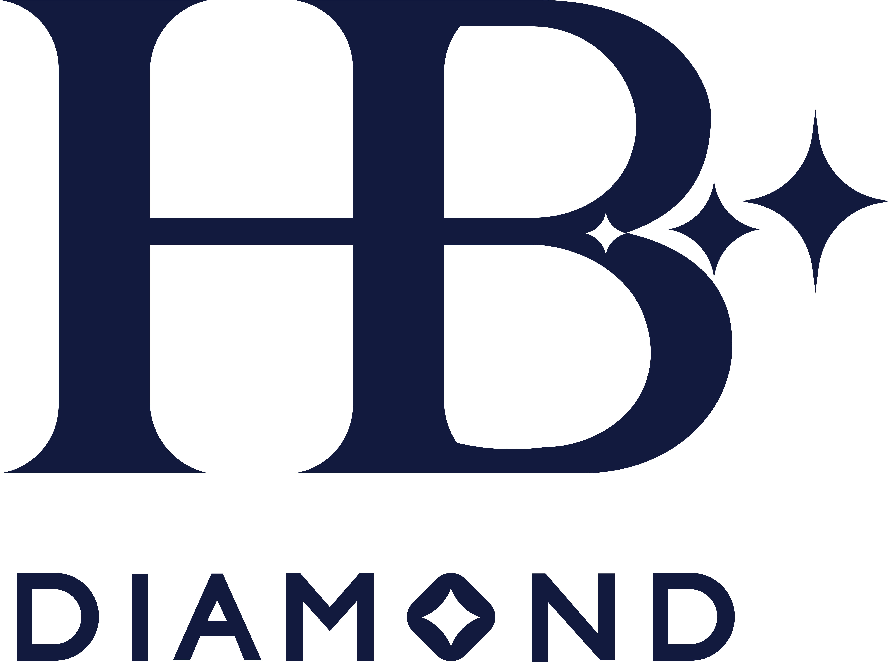

Built an AI-powered CV screening pipeline using Dify that automated candidate scoring end-to-end, cutting manual screening time by 80%.
Deployed API integrations across cloud infrastructures and Dify with OAuth2 authentication, enabling real-time AI-enhanced requisition dashboards.
Created M365 training programs focused on MS Power Platforms, adopted by 140+ HR professionals, accelerating digital adoption across MB HR operations.
Dify AIMS AzurePythonMS Power PlatformGen AI Application
Data Analytics & Digital Transformation Intern
JUN 2024 — DEC 2024
Designed and delivered a mandatory Power BI training program for HR across MB Greater China, covering the full Power BI pipeline, including advanced knowledge such as row-level security.
Built executive-level Power BI dashboards consolidating data from all Mercedes-Benz China entities, providing real-time insights on various HR metrics.
Assisted the MB HR Insights Project (PBI enterprise portal) by collaborating with vendors from Accenture, contributing to workspace design, and UAT.
Presented the upskilling methodology to MB Board Member Sabine Kohleisen, recognized as a high-impact contribution to MBGC digital transformation.
MS Power BIData ModelingData VisualizationTraining & EnablementRLS

MAY 2023 — SEP 2023
HB Diamond
Beijing, China
Sales & Marketing Assistant
Prepared legal documentation and processed colored diamonds for auction at China Guardian, handling $12M+ valuations and pricing strategies.
Closed $400K+ in jewelry sales, managing end-to-end diamond customization from client communication and pricing to design coordination and delivery.
Managed RedNote, Douyin, and other social media for sub-brand Lustre Diamonds, including video scripting, recording, and editing.
Led trademark registration for Lustre Diamonds in China and the U.S., including successful USPTO registration of Lustre Diamond LLC.
Assisted with the 2021 Forbes China International Education Forum, including scriptwriting, rehearsal coordination, event flow design, and on-site operations.
Conducted competitive analysis by monitoring industry events, competitor rankings, digital content, and social media activity.
Researched data from hundreds of sources for Forbes magazine rankings, covering topics from luxury hospitality to real estate leadership.
Planned panel sessions and focus groups with international school parents, contributing qualitative insights to 2021 Forbes Rankings of International Schools.
Event OperationsMarket ResearchCompetitive AnalysisQualitative ResearchData Research
NOV 2020 — MAR 2021
Farfetch
Beijing, China
Product Analytics & Operations Intern
Built the official Curiosity China website (Farfetch B2B subsidiary) and collaborated with the UI/UX team on design feasibility and interface design in Sketch.
Created monthly Tableau dashboards for Balenciaga, Stone Island, and Ducati, analyzing browsing patterns, click-through rates, and conversion metrics.
Maintained the customer-facing user manual for Curiosity China's WeChat program management system, keeping docs current with feature releases.
Managed Farfetch's WeChat mini program by editing homepage banners, linking SKUs to product pages, and publishing weekly content updates.
Business IntelligenceWeb DevelopmentUI/UXData AnalysisE-commerce Operations